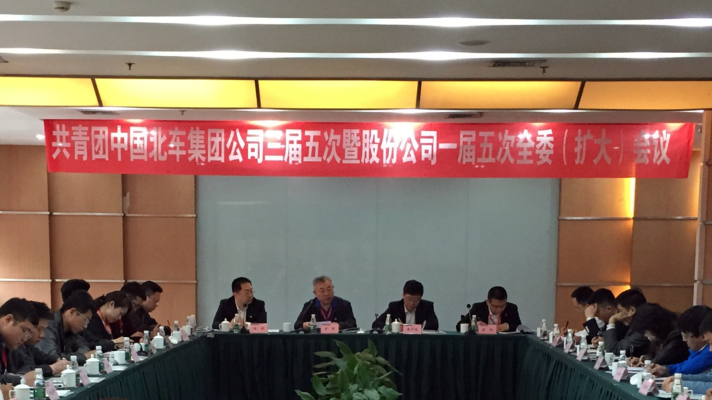

青年工作
中国北车团委现有35周岁以下青年35255人，团员17674人，所属团组织数575个，拥有专兼职团干部1344人。近年来，中国北车团委按照上级团组织工作部署和公司党委的要求，结合企业实际和青年特点，以“服务企业改革发展，服务青年成长成才”为宗旨，以“我与北车共奋进，青春建功十二五”为主题，紧扣企业和青年需求的最佳结合点，扎实推进团的“四大工程”——加强思想引领、提升青年素质、深化创新创效、夯实团建基础，共青团和青年工作生动活泼、富有活力，得到了公司党政领导的充分肯定和团员青年的赞许。2014年，有3个集体、3名个人获国家级荣誉；12个集体、24名个人获省部级荣誉；69个集体、105名个人获市级以上荣誉称号。
思想引领工程。学习贯彻党的十八届三中、四中全会精神，组织开展主题鲜明、形式活泼、有规模、有影响的主题团日活动，强化青年爱党爱国爱企教育，加强形势任务教育，不断增强对青年的思想引领。充分利用各种新媒体，广泛运用团组织和团干部微博、微信平台，通过网络、手机等传播载体，及时捕捉青年的关注点，及时加以服务引导。中国北车青年志愿者服务总队和所属各企业青年志愿者服务队以“奉献、友爱、互助、进步”为宗旨，以“3?5”学雷锋纪念日为契机，组织青年志愿者围绕职工群众生活所需，围绕企业生产经营等，开展形式多样的志愿服务活动，大力弘扬雷锋精神，不断提升青年道德素质和企业文明程度。
素质提升工程。围绕企业中心工作，实施青年素质工程，引导青年将自身的成长成才同企业改革发展实践相结合。青工技能振兴计划、导师带徒、青年职业生涯导航、青年职业技能竞赛、推优荐才等活动形成了工作品牌，为加快培养青年人才搭建了良好平台。各企业团委广泛开展青年安全生产示范岗、青年质量监督岗创建活动，结合“我的中国梦”主题教育实践活动开展形式多样的主题团日活动，提高团员青年岗位建功能力，增强青年工作积极性、主动性和创造性。坚持开展“中国北车十大杰出青年”评选、发现举荐青年先进典型等推优荐才活动，开展学习身边的榜样活动，营造学先进、赶先进的氛围，激励青年快速成长。
创新创效工程。扎实开展青年技术创新百点计划、青年科技论文、“五小”成果、先进操作法征集等活动，在培育青年创新意识、搭建展示舞台、发挥青年聪明才智、促进科技成果转化等方面发挥了显著作用。开展质量、安全、节能降耗竞赛活动，为企业生产经营做贡献。深化“号、手”活动，助推企业重点任务完成。持续开展青年文明号创建活动，努力培养完成重点任务最多、取得效益最大、体现职业文明最好的青年集体。不断促进青年技术人员增强团队合作意识，引导青年立足岗位，彰显活力，奉献企业，解决企业生产经营中的关键和难点问题。
团建基础工程。注重政策导向，坚持党建带团建。不断完善团的制度建设，提高基层团组织建设的科学化水平。深入贯彻团中央和中央企业团工委关于加强团的基层组织建设的有关工作要求，积极探索加强新时期企业基层团组织建设工作的新思路、新做法。着力抓好团的制度体系建设，完善公司共青团工作制度汇编，使团的制度更加贴近青年工作实践，更能调动基层团组织工作的积极性。制发《中国北车团委分区域团组织管理办法》，推动团组织实行片区管理，通过加强片区内单位间的沟通交流，促进团组织的自我管理，提升团组织的活力。加大团员、团干部培养力度，增强共青团事业的生命力。每年举办一次所属企业团委书记培训班，搭建团干部学习交流的平台，提升团干部素质，锤炼团干部作风。